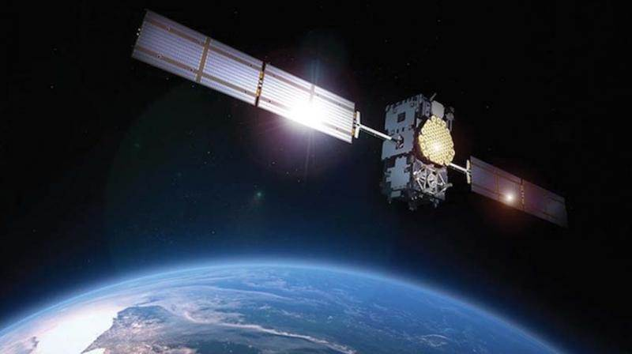
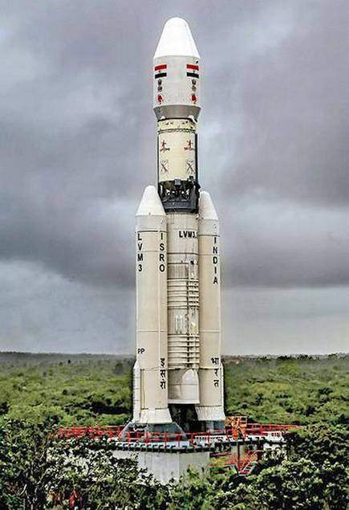

ISRO
ISRO
-
HOME(current)
-
PROJECTS
ACHIEVEMENTS


ISRO over the years have achieved a lot and has been extremely successful in bringing laurels for the country.
Some Major Achievements of ISRO are :-
1. Sattelite Launch Vehicle
The Satellite Launch Vehicle was launched under the able guidance of APJ Abdul Kalam. Furthermore, the SLV project was an achievement in the early 1970s. The first Indian satellite built entirely in India in 1975 was Aryabhatta.
2. Chandrayaan
In 2008, the first space mission to the moon was made by India with the launch of Chandrayaan. Most importantly, it was used to study the topography covering the Earth.
3. Bacteria species
Three bacteria species that have a high resistance to the UV-rays were found in the earth’s upper stratosphere, in 2009 by ISRO.
4. PSLV-C21 rocket
In the year 2012, ISRO launched its 100th space mission and used the PSLV-C21 rocket which placed two satellites in the Earth’s orbit.
5. Mars Orbiter Mission
ISRO successfully launched Mars Orbiter Mission also known as MOM using PSLV-XL In 2013 and it was one of the biggest achievements of ISRO.
6. Reaching Mars
In 2014, India was able to reach Mars successfully at its very first attempt. Notably, only three other space organizations have been able to achieve this. They are NASA, the European Space Program and the Soviet Space Program.
7. GLSV MK3
ISRO launched GLSV MK3 in 2014 which is a crew capsule that can take human beings to space